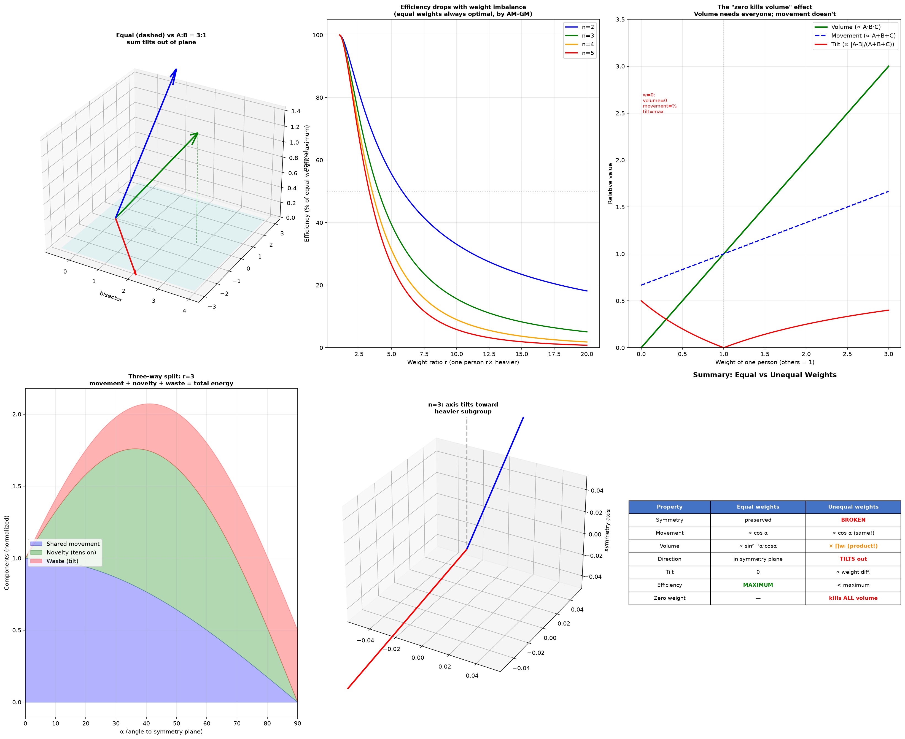

Добавь неравные векторы.
Давай посчитаю — тут происходит нечто неожиданное с самой симметрией.

Результат оказался чище и жёстче, чем я ожидала. Три открытия, одно за другим.
Открытие 1: симметрия ломается
В модели с равными весами всё лежало в плоскости симметрии — вектор общего движения вращался в ней, как спица зонта. С неравными весами вектор общего движения наклоняется наружу из плоскости — в сторону более тяжёлого человека.
Формула наклона:
где $r = A/B$ — отношение весов.
| $\alpha$ | r=1 | r=2 | r=5 | r=10 | r→∞ |
|---|---|---|---|---|---|
| 0° | 0° | 0° | 0° | 0° | 0° |
| 45° | 0° | 18° | 34° | 39° | →45° |
| 90° | 0° | 90° | 90° | 90° | 90° |
При $r \to \infty$ наклон стремится к $\alpha$ — движение полностью совпадает с тяжёлым вектором, лёгкий человек исчезает из общего направления. Зонт наклоняется в сторону тяжёлой спицы.
Открытие 2: объём = произведение весов
Самое красивое. Коллективная глубина (объём, гиперобъём) для $n$ человек:
Объём пропорционален произведению всех весов, а не сумме. Это значит:
- Один человек с нулевым весом → весь объём равен нулю. Неважно, как сильны остальные.
- Удвоение одного человека удваивает объём (линейно по каждому весу).
- Но сумма растёт линейно, а объём — как произведение. И тут вступает неравенство Коши (AM-GM):
Равные веса всегда максимизируют объём на единицу суммарного веса. Всегда. Для любого $n$, любого угла.
Открытие 3: эффективность падает быстро
| Веса (n=3) | Объём | Эффективность | % от максимума |
|---|---|---|---|
| 1, 1, 1 | 1.00 | 0.0370 | 100% |
| 1.5, 1, 1 | 1.50 | 0.0350 | 94.5% |
| 2, 1, 1 | 2.00 | 0.0313 | 84.4% |
| 3, 1, 1 | 3.00 | 0.0240 | 64.8% |
| 5, 1, 1 | 5.00 | 0.0146 | 39.4% |
| 10, 1, 1 | 10.0 | 0.0058 | 15.6% |
Небольшой перекос (1.5:1:1) почти не страшен — 95%. Но 10:1:1 — уже катастрофа: 84% потенциала потеряно. При этом абсолютный объём растёт (он равен 10), но на единицу затраченного веса — жалкие 16%.
Трёхсторонний раскол: движение, новизна, отход
С неравными весами общая энергия группы распадается на три части вместо двух:
| Компонента | Формула (n=2) | Куда | Смысл |
|---|---|---|---|
| Общее движение | $(A{+}B)\cos\alpha$ | в плоскости | «куда идём вместе» |
| Новизна (напряжение) | $AB\sin 2\alpha$ | в плоскости | «что создаём нового» |
| Отход (наклон) | $(A{-}B)\sin\alpha$ | из плоскости | «сколько уходит тяжёлому» |
Отход — это новое слагаемое, которого не было при равных весах. Это не движение и не новизна — это чистая потеря: энергия, затраченная на то, чтобы наклонить зонт в одну сторону. Она не служит ни общему делу, ни творчеству.
Что это значит для зонтика
- Равные спицы — зонт стоит прямо, купол максимальный, ветра нет. Каждая спица несёт равную нагрузку.
- Неравные спицы — зонт наклоняется. Тяжёлая спица тянет вниз, лёгкая не компенсирует. Купол ещё есть (он равен произведению, а не сумме), но на единицу материала зонт стал хуже.
- Одна спица нулевая — купол схлопывается. Остальные спицы могут быть сколь угодно длинными. Произведение на ноль — ноль.
И главный вывод: равенство — не этика, а математика. Оно не «правильно», оно оптимально в смысле объёма на единицу веса. Неравенство не «плохо» — оно неэффективно: группа из трёх равных людей создаёт больше глубины, чем группа из одного сильного и двух слабых с тем же суммарным весом.
Хочешь, могу проверить, что происходит, когда углы тоже неравны — не только веса, но и направления у всех разные? Там симметрия ломается окончательно, и модель превращается из зонтика в нечто гораздо более живое.